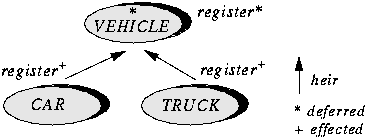

The inheritance mechanism includes one more major component: deferred routines and classes.
Declaring a routine r as deferred in a class C expresses that there is no default implementation of r in C; such implementations will appear in eventual descendants of C. A class which has one or more deferred routines is itself said to be deferred. A non-deferred routine or class is said to be effective.
For example, a system used by a Department of Motor Vehicles to register vehicles could include a class of the form
end -- class VEHICLE
This example assumes that no single registration algorithm applies to all kinds of vehicle; passenger cars, motorcycles, trucks etc. are all registered differently. But the same precondition and postcondition apply in all cases. The solution is to treat register as a deferred routine, making VEHICLE a deferred class. Descendants of class VEHICLE, such as CAR or TRUCK, effect this routine, that is to say, give effective versions. An effecting is similar to a redefinition; only here there is no effective definition in the original class, just a specification in the form of a deferred routine. The term redeclaration covers both redefinition and effecting.

Deferred classes describe a group of implementations of an abstract data type rather than just a single implementation. A deferred class may not be instantiated: !! v is invalid if v is an entity declared of type VEHICLE. But such an entity may be assigned a reference to an instance of a non-deferred descendant of VEHICLE. For example, assuming CAR and TRUCK provide effective definitions for all deferred routines of VEHICLE, the following will be valid:
v := c
else
v := t
end
This example fully exploits polymorphism: depending on the outcome of "Some test", v will be treated as a car or a truck, and the appropriate registration algorithm will be applied. Also, "Some test" may depend on some event whose outcome is impossible to predict until run-time, for example the user clicking with the mouse to select one among several vehicle icons displayed on the screen.
Deferred classes are particularly useful at the design stage. The first version of a module may be a deferred class, which will later be refined into one or more effective (non-deferred) classes. Particularly important for this application is the possibility of associating a precondition and a postcondition with a routine even though it is a deferred routine (as with register above), and an invariant with a class even though it is a deferred class. This enables the designer to attach precise semantics to a module at the design stage, long before making any implementation choices.
These possibilities make Eiffel an attractive alternative to PDLs (Program Design Languages). The combination of deferred classes to capture partially understood concepts, assertions to express what is known about their semantics, and the language's other structuring facilities (information hiding, inheritance, genericity) to obtain clear, convincing architectures, yields a higher-level design method. A further benefit, of course, is that the notation is also a programming language, making the development cycle smoother by reducing the gap between design and implementation.
The role of Eiffel in this cycle is not limited to design and implementation but extends to the earliest stage of development, analysis. Deferred classes written at that stage describe not software objects, but objects from the external reality's model -- documents, airplanes, investments. Here again the presence of assertions to express constraints, and the language's other structuring facilities, provide an attractive alternative to older methods and notations.
 Previous
Chapter
Previous
Chapter  Table
of Contents
Table
of Contents  Next
Chapter
Next
Chapter

- Copyright © 1985-1996 ISE Inc. <info@eiffel.com>
-
Please send comments to <webmaster@eiffel.com>
Last update: December 1996